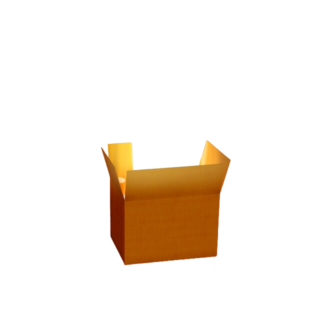
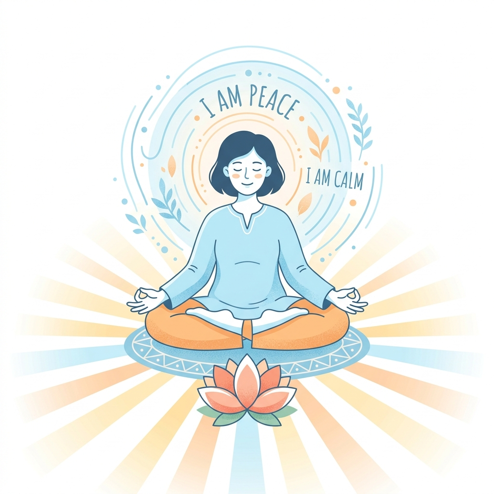
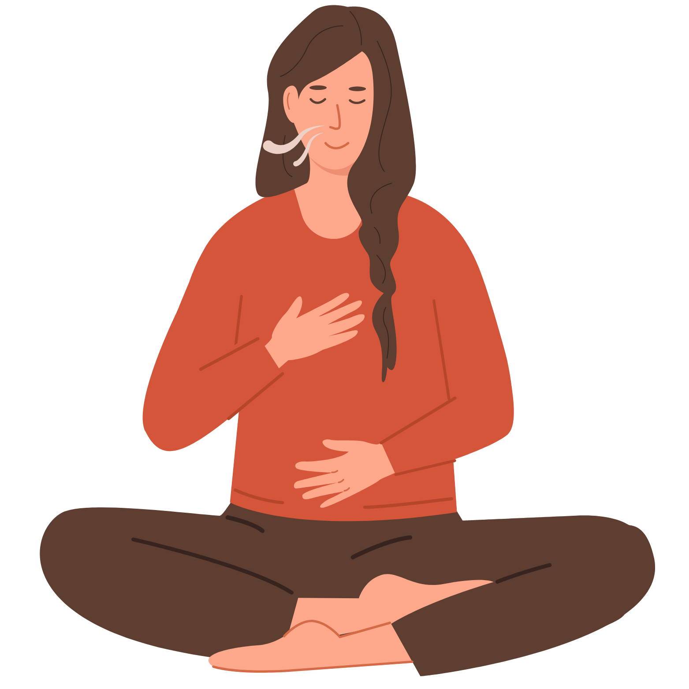
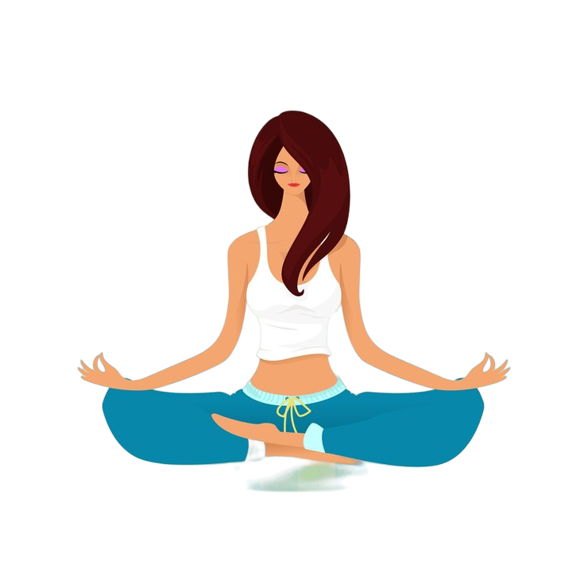
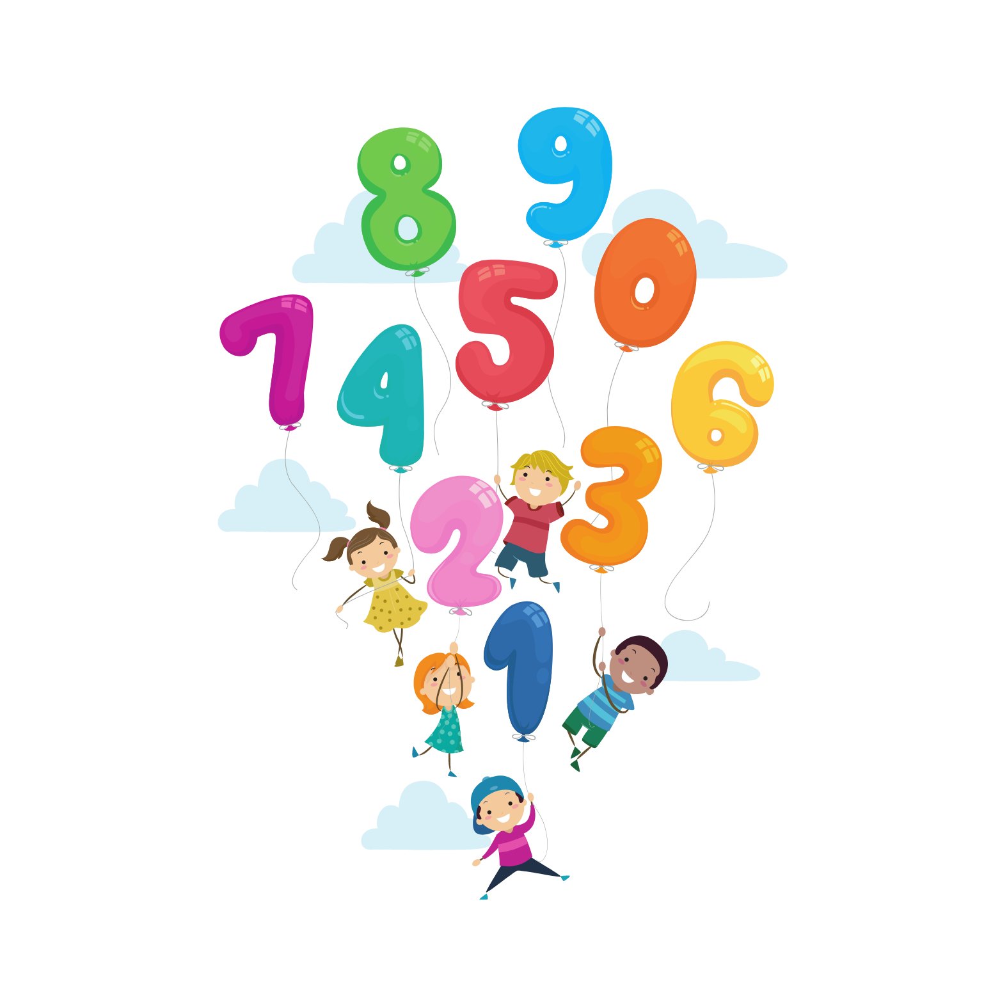

Select Your Coping Ritual
Clinical and evidence-based exercises designed to quickly calm autonomic nervous system activation, break panic cycles, and rebuild cognitive focus.

Box Breathing
Inhale 4s, hold 4s, exhale 4s, and hold 4s. A tactical breathing rhythm to regain composure during exam stress.

4-7-8 Relaxation
A natural tranquilizer for your nervous system. Inhale 4s, hold 7s, exhale 8s to dissolve study tension.

5-4-3-2-1 Grounding
Acknowledge 5 things you see, 4 you feel, 3 you hear, 2 you smell, and 1 you taste to interrupt anxiety spirals.

Alternate Nostril
Nadi Shodhana Pranayama harmonizes both cerebral hemispheres, fostering calm alertness before exams.

Positive Affirmations
Cognitive reframing against imposter syndrome. Build academic self-compassion and gentle confidence.

Belly Breathing
Diaphragmatic abdominal breathing to reverse shallow chest breathing caused by prolonged desk study.

8-4-7 Calm Method
Rhythmic pacing sequence engineered for fast decompression from acute study fatigue and burnout.

Backward Counting
Step backwards by 7s to stimulate the prefrontal cortex, quieting anxiety centers and clearing mental fog.